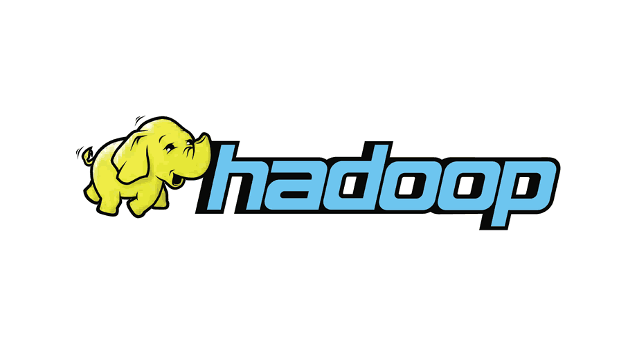
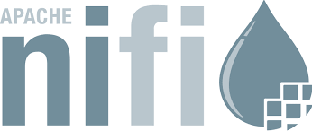
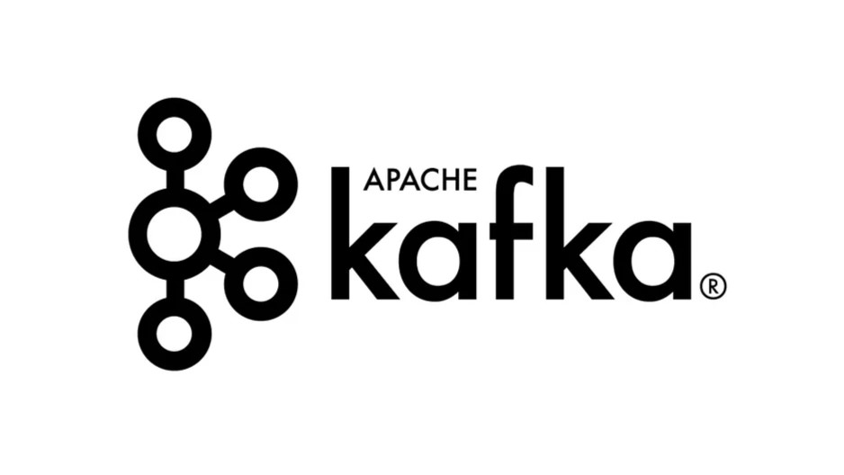
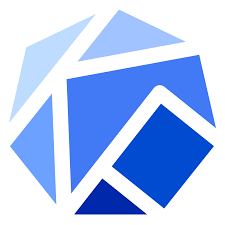
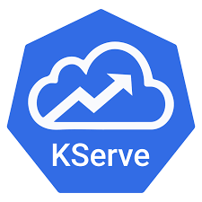

Tarek Zaki
DevOps & Site Reliability Engineer | Kubernetes • AWS • CI/CD • IaC
About Me
I am a DevOps and Cloud Engineer focused on scalable infrastructure, platform reliability, automation, and cloud-native delivery. My work spans Kubernetes platform engineering, CI/CD automation, infrastructure-as-code, observability, big data operations, and MLOps platform enablement.
I design and operate production-oriented systems across cloud, on-premise, and hybrid environments using technologies such as Kubernetes, Docker, AWS, GCP, Terraform, Ansible, ArgoCD, Helm, Kafka, NiFi, Hadoop, Spark, Trino, Prometheus, Grafana, ELK, and InfluxDB.
My engineering approach combines reliability, security, automation, observability, and maintainable architecture to help teams ship faster while keeping infrastructure measurable, resilient, and operationally clean.
Experience
DevOps Engineer - Vodafone
- Design and automate scalable infrastructure, CI/CD pipelines, and internal platform services for high-availability enterprise environments.
- Support DevOps and data platform operations using Kafka, NiFi, Hadoop, HDFS, Hive, Spark, Trino, Sqoop, Flink, and ClickHouse.
- Administer secure Kafka environments using SASL authentication and ACL-based authorization.
- Build centralized observability and logging solutions using Prometheus, InfluxDB, Grafana, Logstash, and Elasticsearch.
- Work on Kubernetes-based platform engineering using kubeadm, Rancher, ingress controllers, and monitoring stacks.
- Contribute to internal MLOps platform setup using Kubeflow, ZenML, KServe, and Qdrant for model deployment and inference validation.
- Implement workflow automation and self-service operational processes using n8n and Ansible.
- Support IaC, compliance enforcement, platform reliability, and operational automation across hybrid infrastructure environments.
DevOps & Observability Engineer - Ortoscale
- Built observability dashboards with Grafana, Prometheus, and VictoriaMetrics.
- Integrated OpenSearch for multi-tenant log analytics and alerting.
- Migrated Swarm workloads to Kubernetes using Helm and custom manifests.
Site Reliability Engineer – Giza Systems
- Managed Kubernetes clusters (multi-master, kubeadm) for staging and production workloads.
- Built a scalable messaging pipeline using MQTT, Kafka, and Elasticsearch.
- Set up centralized logging with Fluent Bit, Loki, and Grafana.
- Automated CI/CD pipelines with ArgoCD and Helm; explored OpenShift pipelines.
Robotics Engineer – MIA Robotics
- Led integration and control of autonomous robots.
- Represented Egypt at ABU Robocon (China 2021, India 2022).
Embedded Hardware Research Assistant – Autotronics Research Lab
- Developed embedded circuits and low-level drivers for autonomous vehicle control systems.
Embedded Software Engineer – Egyptian Space Agency
- Developed control software for satellite tracking systems.
Projects
Telecom Churn MLOps GitOps Platform
An end-to-end MLOps inference platform for telecom churn prediction using FastAPI, Docker, GitHub Actions, Docker Hub, Kubernetes, ArgoCD, Kustomize, and KServe.
- Automated model training, Docker image build, and registry publishing through GitHub Actions.
- Implemented GitOps deployment with ArgoCD and Kustomize to continuously reconcile Kubernetes manifests.
- Deployed the inference service through both a Kubernetes NodePort service and a KServe custom predictor.
- Validated real-time inference through live API requests in a local kind Kubernetes cluster.
Serverless Event-Driven Image Processing Pipeline on AWS
A resilient serverless image processing pipeline built with S3, EventBridge, SQS, Lambda, DynamoDB, CloudFront, AWS SAM, and CloudFormation.
- Implemented asynchronous event processing with SQS and Lambda.
- Configured dead-letter queues, CloudWatch alarms, and X-Ray tracing for operational resilience.
- Applied IAM least privilege and secure S3 delivery through CloudFront Origin Access Control.
- Deployed infrastructure using AWS SAM and CloudFormation.
DevOps CI/CD Pipeline with Infrastructure Hardening
A comprehensive infrastructure automation project implemented on CentOS using Vagrant, this solution demonstrates a production-grade CI/CD pipeline, Apache hardening, Ansible automation, and Linux system administration.
- Provisioned 3 CentOS VMs using Vagrant (Jenkins, Gogs, Deploy).
- Automated Apache installation & hardening via structured Ansible roles.
- Developed Jenkins pipeline to run Ansible, build Docker images, send email reports.
- Hardened Linux with auditd rules, cron alerts, masked services, and firewall policies.
- Designed user management scripts with restricted shell & SSH-only access.
Marketing Automation Platform – DevOps Architecture
A scalable infrastructure for a Django-based campaign automation platform that handles heavy user workloads such as video uploads and Facebook API integrations.
- Architected Docker-based deployment with Django, Celery (multi-queue), Redis, and PostgreSQL.
- Enabled HTTPS via Nginx + Certbot with production domain routing.
- Configured and pushed private Docker images to Amazon ECR.
- Deployed Celery queues to AWS Fargate with fine-tuned concurrency and autoscaling.
- Automated CI/CD workflows with GitHub Actions.
Scalable Web Application on AWS
Designed a fault-tolerant, multi-AZ architecture with EC2, ALB, S3, RDS, and Route 53. Used Elastic Beanstalk for CI/CD automation, integrated CloudWatch for logging and alerting.
View on GitHub
Kubernetes Weather App
Built a microservices-based app using Kubernetes, Nginx Ingress, and TLS. Managed configurations securely with Secrets and ConfigMaps, implemented StatefulSets for backend.
View on GitHub
Skills
Languages
Operating Systems
Cloud Platforms
Containers & Orchestration
 Rancher
RancherCI/CD, IaC & Automation
Big Data, Messaging & Analytics

Hadoop
NiFi Spark
Spark
KafkaMonitoring & Logging
MLOps & AI Platforms

Kubeflow
Kserve